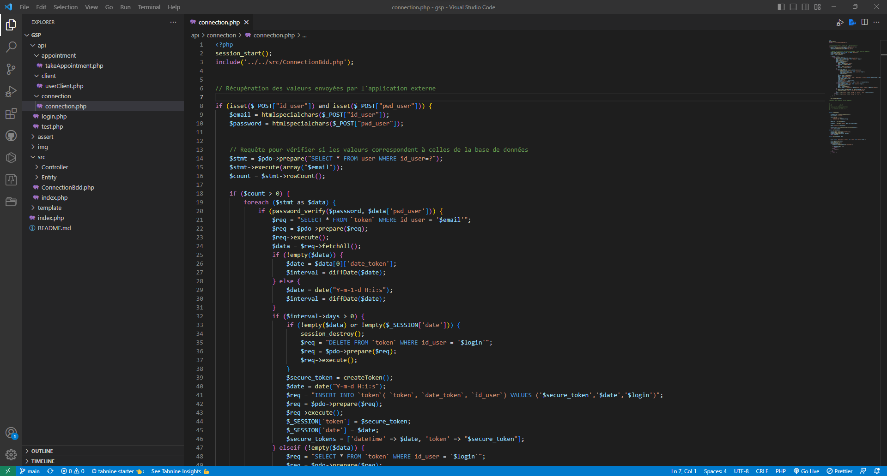
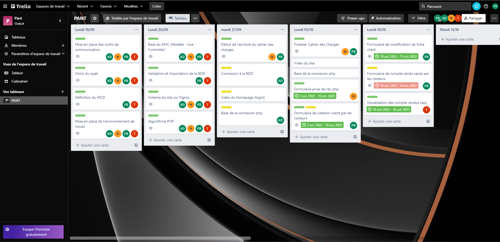
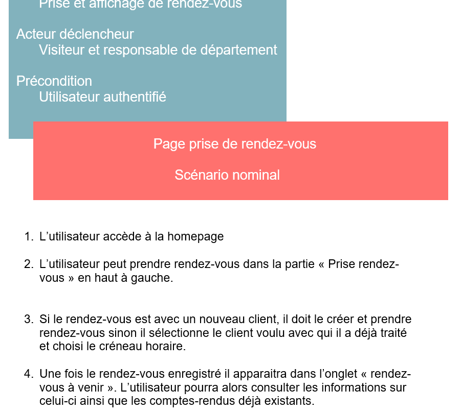

GSB

Ce projet est notre premier gros projet en groupe de seconde année fait en groupe. Nous étions dans une entreprise médical fictive. Notre but était de créer une application web à partir d'un cahier des charges afin de prendre des rendez-vous et créer des comptes-rendus.

Pour commencer l'utilisateur doit se connecter à l'application.
Une fois que celà est fait, chaque utilisateur aura des pages spécifiques à leurs rôles.
Grâce aux commandes PHP l'utilisateur pourra avoir accès à plusieurs actions liés à son rôle.
Par exemple les visiteurs pourront prendre des rendez-vous, saisir des comptes-rendus et aussi créer de nouveaux clients.
Avec les commandes SQL, l'utilisateur pourra afficher diverses données. Par exemple les visiteurs peuvent avoir accès aux informations clients mais aussi à tous ses comptes-rendus.
Pour les utilisateurs ayant le rôle responsable départemental, ce dernier aurra les mêmes actions que les visiteurs.
En plus, ils pourront voir leurs équipes, les rapports de ces derniers prendre des rendez-vous pour eux et valider leurs comptes-rendus.
Le responsable région de son côté va pouvoir voir tous ses hommes, et pourra voir et valider leurs comptes-rendus.
Il aura aussi le privilége de rajouter, modifier ou encore de supprimer les médicaments proposés lors des rendez-vous des visiteurs.
Compétences
Gérer le patrimoine informatique:
- Vérifier les niveaux d’habilitation associés à un service est vérifié car en fonction du poste, la page affichée va différer ainsi que les droits et leurs actions.
- Vérifier le respect des règles d’utilisation des ressources numériques, des outils tels que "htmlspecialchar" des vérifications de session... sont mises en place pour vérifier le droit d'accès aux ressources.
Développer la présence en ligne de l’organisation :
- Participer à l’évolution d’un site Web exploitant les données de l’organisation. Notre site web même s'il ne devait pas être relié au site de l'entreprise devait correspondre a celui-ci (à partir du logo).
Mettre à disposition des utilisateurs un service informatique :
- Déployer un service. L'outil github pour le mettre en place puis pour sa mise en ligne.
- Accompagner les utilisateurs dans la mise en place d’un service grâce à la fiche descriptive du projet qui donne un support d'information et le service déployé est opérationnel.